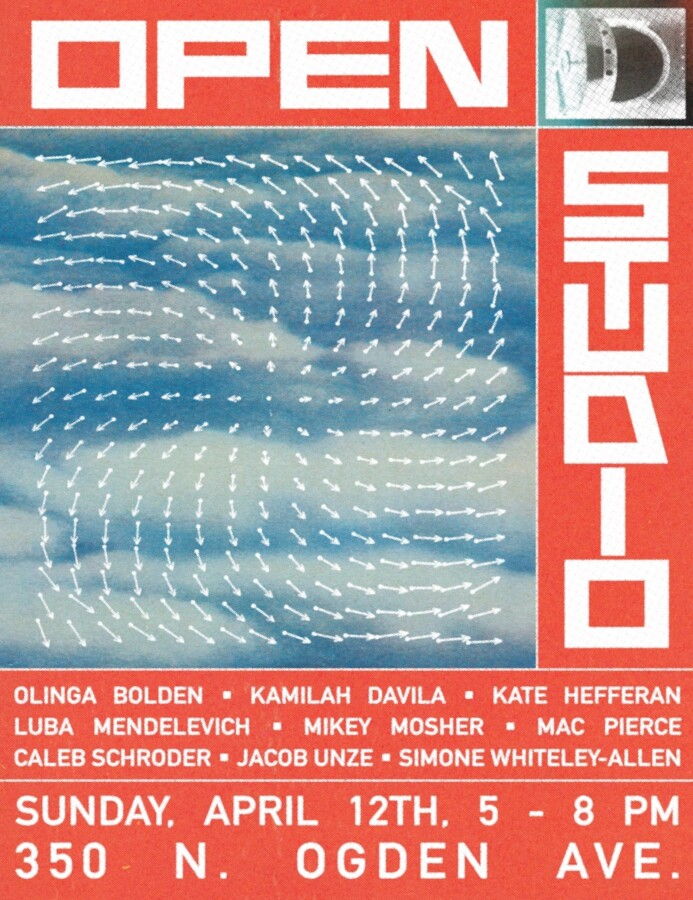

Open Studios at 350 N. Ogden
In partnership with Soho House Chicago, artists at 350 N. Ogden’s studios will be opening up their spaces to public visitors. Artists include: Olinga Bolden, Mikey Mosher, Mac Pierce, Luba Mendelevich, Simone Whiteley-Allen, Jacob Unze, Kate Hefferan, Caleb Schroder and Kamilah Davila.